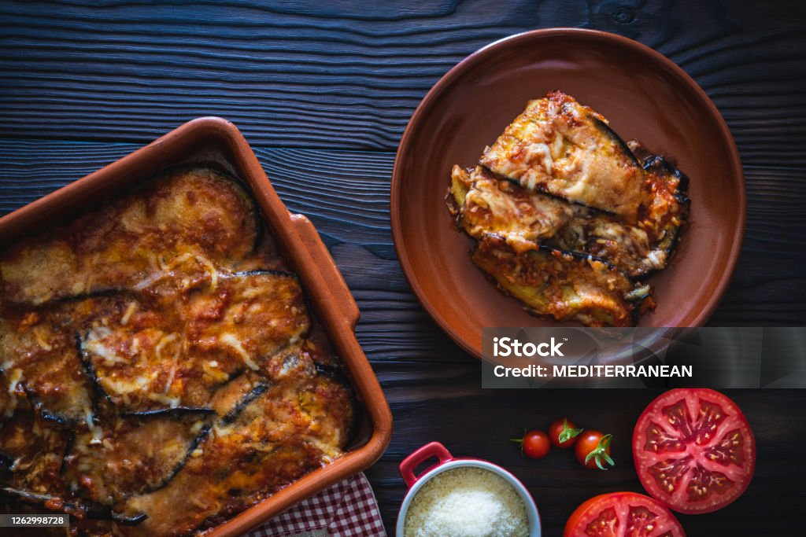

Vegetarian Moussaka

Vegetarian Mousaak Recipe
This Vegetarian Moussaka recipe is based on am authentic dish, made healthier. Layers of roasted eggplants, zucchini, and potatoes are layerd with a homemade lential tomato sauce, topped with bechamel sauce and sprinkled with cheese.
Ingedients
Vegetables:
- 4 zucchini
- 3 russet potatoes
- 2 eggplant
- 3 Tbsp dired oregano
Tomato Sauce:
- 4 Tbsp Olive oil
- 1 onion diced
- 4 garlic cloves diced
- 1 1/2 cups cooked lentils
- 3 cups diced red tomatoes
- 1/2 tsp cayenne pepper
bechamel Sauce:
- 3 Tbsp butter
- 3 Tbsp all purpose flour
- 2 cups milk
- 2 eggs
Instructions:
- Preheat oven to 5ooF. Prep and grease two baking sheets. Lightly grease and prep casserole dish.
- Slice zucchini, eggplants and potatoes.
- Spread out the vegetables in a single layer across the baking sheets. Drizzle with olive oil, and sprinkle lightly with oregano, saly and black pepper.
- Place baking sheets in the oven for 15 minutes. Eggplants with need an additional 5 minutes. Remove vegetables from baking sheets and set aside
- Set a large pot on the oven to medium heat and add 2 Tbsp of olive oil.
- Add oinions until softened.
- Add garlic for another minute
- Add cooked lentils, diced tomatoes. 1 Tbsp dried oregano, chili falkes, salt and pepper to taste
- Cook lentils in saucde for 10-12 minutes
- Add butter to a small sauce pan. Whisk in flour and cook until a paste.
- Add hot milk and whisk until sauce thickens. Bring sauce to boil than season with salt and pepper and cook, whisking constantly, for 2 to 3 minutes
- Whisk eggs into a medium bowl, then add a little of the sauce to the bowl: stir to combine. Pour the eggs into the sauce and let it cook for another 1-2 minutes.
- Assemble the Vegetarian Moussaka into a 9 x 13 baking dish.
- Pour 1/2 cip the lentil sauce into the bottom of the baking dish.
- Layer the eggplant on top. Then follow with a layer of the zucchini and potatoes. Sprinkle wit feta cheese and the remainder if the lential sauce. Reapt vegetables in the same order
- Pour in the bechamel sauce and smooth with a spatial. Top with the remaining feta and parmesan. Sprinkle with oregano
- Bake at 375 for 45 minutes. In the last 5 minutes switch to broil to brown cheese.
- Serve hot fpr best reslits
Home